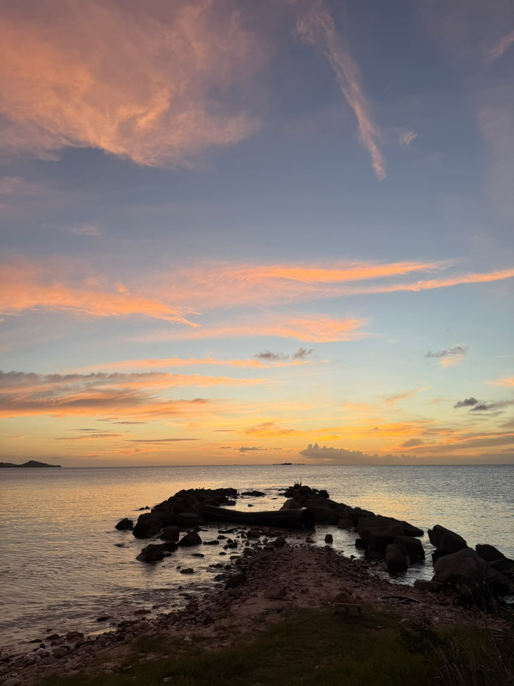
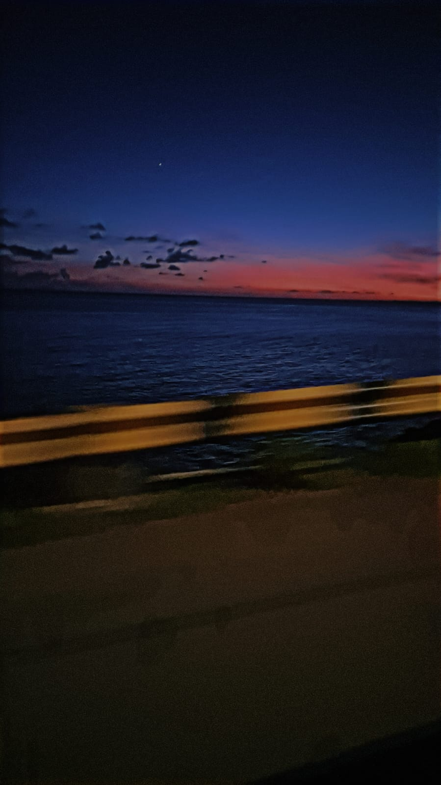

My Web Development Journey
September 27, 2026 by Blog Author

I love desinging things which i appreate in web development. I have apperciatied my new found knowledge of using heading, images and many other elements in structuring a website.
I am looking forward to my continuous learning of CSS and JAVA, to not only satisfy my love for coding but to also help me with making eye catching websites in the future.
Finding inspiration outside
September 29, 2026 by Blog Author

Sitting outside and watching the sunset is my way of connecting with nature. This weekend while on a beach drive, the colors of the sky made me think of how colorful and eye catching a website should and can be.
Back at my home, I have tried to bring that sense of calm through this blog.